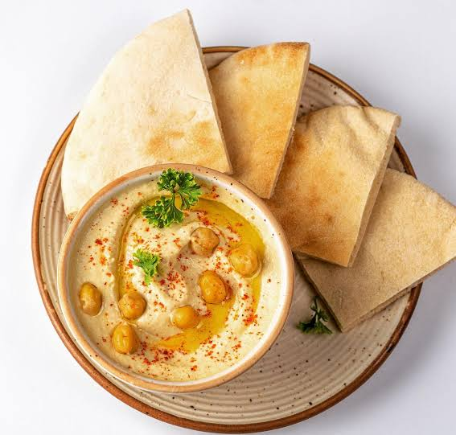
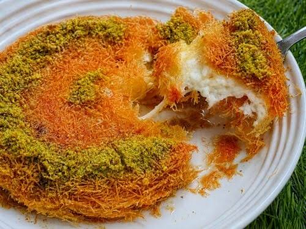

<!DOCTYPE html>
<html lang="en">
<head>
    <meta charset="UTF-8">
    <meta name="viewport" content="width=device-width, initial-scale=1.0">
    <title>Middle Eastern Food </title>
     <link rel="stylesheet" href="style.css"
  </head>
<body>
    
</body>
</html>

<body>


    <header>

        <nav>

            <h2>Arabic Food</h2>


            <ul>
               <li><a href="index.html">Home</a></li>

                <li><a href="foods.html">Foods</a></li>

                <li><a href="culture.html">Culture</a></li>

            </ul>
          ds
        </nav>

    </header>


    <section class="hero">

        <div class="hero-text">                                                                                                                                

            <h1>Discover Middle Eastern Food</h1>


            <p>

                Explore the delicious flavours, spices and traditional

                dishes that make arabic cuisine special.

            </p>


            <a href="foods.html" class="button">Explore Foods</a>

        </div>

    </section>


    <section class="intro">


        <h2>Welcome to Middle Eastern Cuisine</h2>


        <p>

            Arabic food is known for its rich flavours, bold,aromatic spices,fresh herbs,healthy 
            use of olive oil and variety of dishes. falafel, rice, dates and kebabs

            spices are important parts of many traditional meals.

        </p>


        <div class="cards">


            <div class="card">
                jjkk

                

                <h3>Hummus and Khubz</h3>

                <p>A popular made with chicked peas and eaten with pita bread called khubz.
                    Hummus and khubz form a traditional Middle Eastern duo featuring 
                     a smooth chickpea dip served with soft, unleavened flatbread
                </p>

            </div>


            <div class="card">

                

                <h3>falafel</h3>

                <p>Falafel is a deep-fried ball or patty-shaped fritter that features in
                     Middle Eastern cuisine, 
                    particularly Levantine cuisines. 
                    It is made from ground fava beans, chickpeas, or both,
                     and mixed with herbs and spices before frying.</p>

            </div>


            <div class="card">

                

                <h3>kunafa</h3>

                <p>Knafeh is a traditional Arab dessert made with kadayif layered with cheese
                 and soaked in a sweet, sugar-based syrup called attar. 
                 Knafeh is popular throughout the Arab world it is often served during special occasions and holidays.</p>

            </div>


        </div>


    </section>


    <footer>

        <p>© 2026 Middle Eastern Food</p>

    </footer>


</body>

</html>
